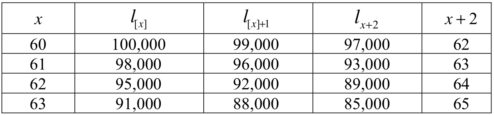

Chapter 2 Method Exercises
Section 2.2 Method Exercises
Exercise 2.2.1. Complete the entries below:
\[
\begin{array}{c|c|c|c}
S_0(t) & F_0(t) & f_0(t) & \mu_t = \frac{f_0(t)}{S_0(t)} \\
\hline
(a)& (b) &(c)& \tan(t),\;0 \leq t \leq \frac{\pi}{2} \\
e^{-t},\;t\geq 0 & (d)& (e)& (f)\\
(g) &1 - \frac{1}{1+t},\;t\geq 0 & (h) &
\end{array}
\]
For parts (a), (b), (c), we have:
\[\begin{eqnarray*}
\mu_t &=& \tan(t), 0 \leq t \leq \frac{\Pi}{2}\\
\int_0^t \tan(u)\,du &=& -\log\left\{\cos(x)\right\} \\
\Rightarrow S_0(t) &=& e^{-\int_0^x \tan(u)\,du} = \cos(x) \\
\Rightarrow F_0(t) &=& 1- \cos(x) \\
f_0(t) &=& \sin(t)
\end{eqnarray*}\]
For parts (d), (e), (f), we have:
\[\begin{eqnarray*}
S_0(t) &=& e^{-t},\,t \geq 0 \\
F_0(t) &=& 1 - e^{-t} \\
f_0(t) &=& e^{-t} \\
\mu_t &=& 1
\end{eqnarray*}\]
For parts (g), (h), (i), we have:
\[\begin{eqnarray*}
F_0(t) &=& 1 - \frac{1}{1+t},\,x \geq 0 \\
S_0(t) &=& \frac{1}{1+t} \\
f_0(t) &=& \frac{1}{(1+t)^2} \\
\mu_t &=& \frac{1}{1+t}
\end{eqnarray*}\]
Exercise 2.2.2. If \(S_0(t) = \left[1 - \frac{t}{100}\right]^{1/2},\) \(0\leq t \leq 100\), evaluate (a) \(_{17}p_{19}\), (b) \(_{15}q_{36}\), (c) \(_{15|13}q_{36}\), (d) \(\mu_{36} = \frac{f_0(36)}{S_0(36)}\), and (e) \(E[T_{36}]\).
First calculate survival function:
\[
S_0(19) = \sqrt{1 - \frac{19}{100}} = 0.9,\,S_0(36)=0.8,\,S_0(51)=0.7,\,S_0(64)=0.6
\]
\[
{_{17}p_{19}} = \frac{S_0(36)}{S_0(19)} = 0.8888888
\]
\[
{_{15}q_{36}} = \frac{S_0(36) - S_0(51))}{S_0(36)} = 0.125
\]
\[
{_{15 \mid 13}q_{36}} = \frac{S_0(51) - S_0(64)}{S_0(36)} = 0.125
\]
\[\begin{eqnarray*}
\mu_{36} &=& \left.-\frac{S_0'(x)}{S_0(x)}\right|_{x=36} = \left.-\frac{-\frac{1}{200 \sqrt{1 - \frac{x}{100}}}}{S_0(x)}\right|_{x=36} \\
&=& \left.\frac{1}{200\,S_0^2(x)}\right|_{x=36} = \frac{1}{S_0(36)\,S_0(36)\,200} = 0.0078125
\end{eqnarray*}\]
\[\begin{eqnarray*}
f_{x}(t) &=& {_tp_x}\,\mu_{x+t} = \frac{S_0(x+t)}{S_0(x)} \frac{1}{200\,S_0^2(x+t)}\\
&=& \frac{1}{200\,S_0(x)\,S_0(x+t)} = \frac{1}{200}\frac{1}{\sqrt{1 - \frac{x}{100}}} \frac{1}{\sqrt{1 - \frac{x+t}{100}}}
\end{eqnarray*}\]
\[\begin{eqnarray*}
\Rightarrow E\left[T_{36}\right] &=& \int_0^{64} \frac{t}{200}\frac{1}{\sqrt{1 - \frac{36}{100}}} \frac{1}{\sqrt{1 - \frac{36+t}{100}}}\,dt \\
&=& \frac{1}{160} \int_0^{64} t \, \frac{1}{\sqrt{1-\frac{36+t}{100}}}\,dt \\
&\stackrel{\text{int.\ by parts}}{=}& \frac{1}{160}
\left(
\left. -t\,200\,\sqrt{1-\frac{36+t}{100}}\right|_{t=0}^{t=64} \right. \\
&\;&\;\;\;\;\;\;\;\;\;\;\;\left.+ 200\int_0^{64}\sqrt{1-\frac{36+t}{100}}\,dt
\right)\\
&=& 1.25 \left(\left.-\frac{3}{2} 100 \left(1 - \frac{36+t}{100}\right)^{\frac{3}{2}}\right|_{t=0}^{t=64}\right)\\
&=& 42.666666 \text{ years.}
\end{eqnarray*}\]
Exercise 2.2.3. The graph of a piecewise linear survival function, \(S_0(x)\), consists of 3 line segments with endpoints \((0,1)\), \((50,0.75)\), \((75,0.50)\), \((100,0)\).
\[
\frac{_{20|20}q_{40}}{_{20}q_{60}}.
\]
Note that this is similar to SOA Exam M Fall 2005 No. 31.
We have:
\[\begin{eqnarray*}
\frac{_{20|20}q_{40}}{_{20}q_{60}} &=& \frac{\frac{S_0(60) - S_0(80)}{S_0(40)}}{\frac{S_0(60) - S_0(80)}{S_0(60)}} = \frac{S_0(60)}{S_0(40)}.
\end{eqnarray*}\]
Now:
\[\begin{eqnarray*}
S_0(40) &=& 1 - 0.25 \left(\frac{40 - 0}{50 - 0}\right) = 1- \frac{1}{4} \times \frac{4}{5} = 0.8,\\
S_0(40) &=& 0.75 - 0.25 \left(\frac{60 - 50}{75 - 50}\right) = 0.75- \frac{25}{100} \times \frac{10}{25} = 0.65.
\end{eqnarray*}\]
Hence,
\[\begin{eqnarray*}
\frac{_{20|20}q_{40}}{_{20}q_{60}} &=& \frac{S_0(60)}{S_0(40)} = \frac{0.65}{0.80} = \frac{13}{16}.
\end{eqnarray*}\]
Section 2.3 Method Exercises
Exercise 2.3.1. For the following survival functions \(S_0\), calculate the force of mortality \(\mu_x\):
- \(S_0(x) = e^{-\lambda\,x}\).
- \(S_0(x) = \left\{\begin{array}{ll} 1 - \frac{x}{\omega}, & 0\leq x \leq \omega, \\ 0 & x > \omega. \end{array} \right.\)
These are historically important examples. Here we have
\[
\mu_x = \frac{-S_0'(x)}{S_0(x)} = \frac{\lambda\,e^{-\lambda x}}{e^{-\lambda x}} = \lambda.
\]
Thus, this case is frequently referred to as . Note that here \(T_x\) is exponentially distributed.
For \(0\leq x < \omega\):
\[
\mu_x = \frac{-S_0'(x)}{S_0(x)} = \frac{\frac{1}{\omega}}{1 - \frac{x}{\omega}} = \frac{1}{\omega - x}.
\]
This mortality assumption is called .
Exercise 2.3.2. Confirm that each of the following functions can serve as a force of mortality. Show the corresponding survival function. In each case \(x\geq 0\).
- \(B\,c^x,\;B>0,\;c>1\) (Gompertz Law);
- \(k\,x^n,\;n>0,\;k>0\) (Weibull Law);
- \(a\,(b+x)^{-1},\;a>0,\;b>0\) (Pareto Law).
\[\begin{eqnarray*}
\mu_x &\geq& 0 \text{ -- OK} \\
\int_{0}^x \mu_u\,du &=& B \int_0^x c^u\,du \\
&=& \frac{B}{\log(c)} \int_0^x \log(c)\cdot c^u\,du \\
&=& \frac{B}{\log(c)} (c^x - 1) \rightarrow \infty\, (x \rightarrow \infty) \text{ -- OK} \\
\Rightarrow S_0(x) &=& \exp\left\{ - \frac{B}{\log(c)} (c^x - 1)\right\}
\end{eqnarray*}\]
\[\begin{eqnarray*}
\mu_x &\geq& 0 \text{ -- OK} \\
\int_{0}^x \mu_u\,du &=& \int_0^x k\,u^n\,du \\
&=& \frac{k}{n+1} x^{n+1} \rightarrow \infty\, (x \rightarrow \infty) \text{ -- OK} \\
\Rightarrow S_0(x) &=& \exp\left\{ - \frac{k}{n+1} x^{n+1}\right\}
\end{eqnarray*}\]
\[\begin{eqnarray*}
\mu_x &\geq& 0 \text{ -- OK} \\
\int_{0}^x \mu_u\,du &=& \int_0^x \frac{a}{b+u}\,du \\
&=& a\log(b+x) - a \log(b)
\rightarrow \infty\, (x \rightarrow \infty) \text{ -- OK} \\
\Rightarrow S_0(x) &=& \left(\frac{b}{b+x}\right)^a\\
\end{eqnarray*}\]
Exercise 2.3.3. You are given the following information about a new model for buildings with 3imiting age \(\omega\).
- The expected number of buildings surviving at age \(x\) will be
\[
l_x = \left(\omega - x\right)^{\alpha},\,x<\omega.
\]
- The new model predicts a \(50\%\) higher complete life expectancy (over the previous De Moivre model with the same \(\omega\)) for buildings aged 25.
- The complete life expectancy for buildings aged 55 under the new model is 37.5 years.
Calculate the complete life expectancy under the previous De Moivre model for buildings aged 75.
We have:
\[\begin{eqnarray*}
\stackrel{\circ}{e}^{\text{NEW}}_x &=& \int_0^{\infty} {_tp_x}\,dt
= \int_0^{\infty} \frac{l_{x+t}}{l_x} \,dt\\
&=& \frac{1}{(\omega - x)^{\alpha}} \int_0^{\omega - x} (\omega - x - t)^{\alpha}\,dt
= \frac{1}{(\omega - x)^{\alpha}} \left[\frac{-1}{\alpha + 1} (\omega - x - t)^{\alpha+1}\right]_{t=0}^{t=\omega - x}\\
&=& \frac{\omega - x}{\alpha + 1}
\end{eqnarray*}\]
and
\[\begin{eqnarray*}
\stackrel{\circ}{e}^{\text{OLD}}_x &=& \int_0^{\infty} {_tp_x}\,dt
= \int_0^{\infty} \frac{S_0(x+t)}{S_0(x)} \,dt\\
&=& \frac{1}{1 - \frac{x}{\omega}} \int_0^{\omega - x} 1 - \frac{x+t}{\omega}\,dt
= \frac{1}{1 - \frac{x}{\omega}} \left(\left[t\right]_{t=0}^{t=\omega - x} - \left[\frac{1}{2\omega}(x+t)^2\right]_{t=0}^{t=\omega - x}\right)\\
&=& \frac{\omega^2 - 2\omega x + x^2}{2(\omega - x)}
= \frac{\omega - x}{2}.
\end{eqnarray*}\]
From condition (b), we obtain
\[\begin{eqnarray*}
\underbrace{\frac{\omega - 25}{\alpha + 1}}_{=\stackrel{\circ}{e}^{\text{NEW}}_{25}} \stackrel{!}{=} \frac{3}{2}\underbrace{ \frac{\omega - 25}{2}}_{=\stackrel{\circ}{e}^{\text{OLD}}_{25}}
\Rightarrow \underbrace{\frac{\omega - 25}{\alpha + 1}}_{=\stackrel{\circ}{e}^{\text{NEW}}_{25}} \stackrel{!}{=} \frac{\omega - 25}{4/3}
\Rightarrow \alpha = 1/3,
\end{eqnarray*}\]
and from (c)
\[
\frac{\omega - 55}{4/3} = 37.5 \Rightarrow \omega = 105.
\]
Thus,
\[
\stackrel{\circ}{e}^{\text{OLD}}_{75} = \frac{105-75}{2} = 15.
\]
Exercise 2.3.4. Consider the survival function
\[
S_0(x) = 1 - \frac{x^2}{10,000},\;0\leq x \leq 100.
\]
Calculate the mean, median, and the variance of \(T_x\) (respectively its distribution). What is the average life-expectancy of a newborn, what’s its median, mode, and variance? What is \(\stackrel{\circ}{e}_{x:\overline{n}|}\)?
We have:
Mean:
\[\begin{eqnarray*}
\stackrel{\circ}{e}_x &=& \int_0^\infty {_tp_x}\,dt \\
&=& \frac{1}{S_0(x)} \int_{0}^{100-x} 1 - \frac{(x+t)^2}{10,000}\,dt \\
&=& \frac{1}{S_0(x)} \left((100-x) - \frac{1}{10,000} \left[\frac{1}{3}(x+t)^3\right]_{t=0}^{t=100-x}\right)\\
&=& \frac{1}{S_0(x)}\left(100-x- \frac{100}{3} +\frac{x^3}{30,000}\right)\\
&=&\frac{1}{S_0(x)} \left( 66.666666 - x + \frac{x^3}{30,000} \right).
\end{eqnarray*}\]
Similarly, we can obtain \(\stackrel{\circ}{e}_{x:\overline{n}|} = \frac{1}{S_0(x)} \int_{0}^{n} 1 - \frac{(x+t)^2}{10,000}\,dt\).
Variance:
\[\begin{eqnarray*}
Var(T_x) &=& 2 \int_0^{100-x} t\,{_t p _x}\,dt - \stackrel{\circ}{e}^2_x \\
&=& \frac{2}{S_0(x)} \int_0^{100-x} t -\frac{t(x+t)^2}{10,000}\,dt - \stackrel{\circ}{e}^2_x \\
&=& \frac{2}{S_0(x)} \int_0^{100-x} t - \frac{x^2t}{10,000} - \frac{2xt^2}{10,000} \\
&& - \frac{t^3}{10,000}\,dt - \stackrel{\circ}{e}^2_x \\
&=& \frac{2}{S_0(x)} \left( \frac{1}{2}(100-x)^2 \right.\\
&& - \frac{x^2}{10,000} (100-x)^2 -\frac{2x}{30,000} (100-x)^3 \\
&& \left. - \frac{1}{40,000} (100-x)^4 \right)
- \stackrel{\circ}{e}^2_x.
\end{eqnarray*}\]
Median: An easier way to derive the result is to work with the cumulated distribution function rather than the survival function.
\[\begin{eqnarray*}
0.5 &\stackrel{!}{=} & P\left(T_x > m(x)\right) \\
\Rightarrow 0.5 &=& {_{m(x)}p_x} \\
\Rightarrow 0.5\left(1 - \frac{x^2}{10,000}\right) &=& 1 - \frac{(x+m(x))^2}{10,000} \\
\Rightarrow 0 &=& 1 - \frac{x^2}{10,000} - \frac{2\,x\,m(x)}{10,000} - \frac{m^2(x)}{10,000}
- 0.5 + \frac{x^2}{20,000} \\
\stackrel{\cdot (-20,000)}{\Rightarrow}
0&=& 2 m^2(x) + 4\,x\,m(x) + (x^2 - 10,000) \\
\Rightarrow m(x) &=& \frac{-4x + \sqrt{16x^2 - 8(x^2-10,000)}}{4}.
\end{eqnarray*}\]
For \(x=0\):
\[\begin{eqnarray*}
\stackrel{\circ}{e}_x &=& 66.666666 \\
Var(T_0) &=& 5000 - 4444.444444 = 555.555556\\
\Rightarrow \sigma_{T_0} &=& \sqrt{555.555556} = 23.57\\
m(0) &=& 70.710678 \\
\max\left\{f_{0}(t)\right\} &=& \max\left\{-s'(t)\right\}\\
&=& \max\left\{\frac{2t}{10,000} | 0 \leq t \leq 100\right\} = 0.02 \text{ for } t=100,
\end{eqnarray*}\]
so the mode is 100.
Exercise 2.3.5. For \(T\), the future lifetime random variable for \((0)\):
- \(\omega > 70\)
- \({_{40}p_0} = 0.6\)
- \(E[T] = 62\)
- \(E[\min\{T,t\}] = t - 0.005\cdot t^2\;,\;\;0<t<60\)
Calculate the complete expectation of life at 40.
We have:
\[\begin{eqnarray*}
E[T] &=& \stackrel{\circ}{e}_0 = \int_0^{\omega} {_sp_0}\,ds = 62\\
\text{and }E[\min\{T,t\}] &=& \stackrel{\circ}{e}_{0:\overline{t}|} = \int_0^{t} {_sp_0}\,ds = t - 0.005 \times t^2,\;t<60.\\
\end{eqnarray*}\]
In particular,
\[\begin{eqnarray*}
\stackrel{\circ}{e}_{0:\overline{40}|} &=& \int_0^{40} {_sp_0}\,ds = 32,
\end{eqnarray*}\]
so that
\[\begin{eqnarray*}
\int_{40}^{\omega} {_sp_{0}}\,ds = \stackrel{\circ}{e}_0 -\stackrel{\circ}{e}_{0:\overline{40}|} = 30.
\end{eqnarray*}\]
Thus:
\[\begin{eqnarray*}
\stackrel{\circ}{e}_{40} &=& \int_0^{\omega - 40} {_sp_{40}}\,ds = \int_0^{\omega - 40} \frac{ {_sp_{40}} \, {_{40}p_{0}}}{ {_{40}p_{0}}}\,ds \\
&=& \frac{1}{ {_{40}p_{0}}} \int_0^{\omega -40} {_{s+40}p_0}\,ds \stackrel{u=s+40}{=} \frac{1}{ {_{40}p_{0}}} \int_{40}^{\omega} {_{u}p_0}\,ds = \frac{30}{.6} =50.
\end{eqnarray*}\]
Section 2.4 Method Exercises
Exercise 2.4.1. Consider Mr. (55). By using the Life Table based on the US population, evaluate the probability
- that (55) survives until 70;
- that he survives until 60 but dies before 70;
- the probability for not dying before 100;
- the probability to die with 70.
- \({_{15}p_{55}} = \frac{l_{70}}{l_{55}} = \frac{91,082.40}{97,846.20} \approx 0.930873146\).
- \({_{5|10}q_{55}} = \frac{l_{60} - l_{70}}{l_{55}} = \frac{96,634.10 - 91,082.40}{97,846.20} \approx 0.056739046;\)
- \({_{45}p_{55}} = \frac{l_{100}}{l_{55}} = \frac{6,248.20}{97,846.20} \approx 0.06385736;\)
- \({_{15|}q_{55}} = \frac{d_{70}}{l_{55}} = \frac{948.40}{97,846.20} \approx 0.009692763.\)
Exercise 2.4.2. You are given
\[
q_1 = 0.1, \; q_2=0.05
\]
Compute the temporary 1.5-year complete expected lifetime for \(x=1\), \(\stackrel{\circ}{e}_{1:\overline{1.5}|}\), under the assumption of a uniform distribution of deaths within each year of age.
We have
\[\begin{eqnarray*}
\stackrel{\circ}{e}_{1:\overline{1.5}|} &=& \int_0^{1.5} {_tp_1}\,dt = \int_0^{1} {_tp_1}\,dt + \int_1^{1.5} {_tp_1}\,dt = \int_0^{1} 1- t\cdot {q_1}\,dt + {p_1}\,\int_1^{1.5} {_{t-1}p_2}\,dt \\
&\stackrel{s=t-1}{=}& 1- {q_1}\, \int_0^{1} t\,dt + {p_1}\,\int_0^{0.5} {_{s}p_2}\,ds = 1 - {q_1}\, \left[0.5\cdot t^2\right]_{t=0}^1 + {p_1}\, \int_0^{0.5} 1 - s\cdot {q_2}\,ds\\
&=& 1 - 0.5\cdot q_1 + {p_1}\,\left(\left[s - {q_2}\cdot 0.5\cdot s^2\right]_{s=0}^{0.5}\right) =
0.95 + 0.9\,\left(0.5 - 0.05\cdot 0.5 \cdot 0.5^2\right) = 1.394375.
\end{eqnarray*}\]
Exercise 2.4.3. The actuarial department for the SharpPoint Corporation models the lifetime of pencil sharpeners from purchase using the survival function
\[
S_0(x) = \left(1 - \frac{x}{\omega}\right)^{\alpha}, \text{ for }\alpha >0 \text{ and } 0 \leq x \leq \omega.
\]
A senior actuary examining mortality tables for pencil sharpeners has determined that the original value of \(\alpha\) must change. You are given:
- The new complete expectation of life at purchase is half what it was previously.
- The new force of mortality for pencil sharpeners is 2.25 times the previous force of mortality for all durations.
- \(\omega\) remains the same.
Calculate the original value of \(\alpha\).
We have
\[\begin{eqnarray*}
\stackrel{\circ}{e}_0 &=& \int_0^{\omega} {_tp_0}\,dt = \int_0^{\omega} S_0(t)\,dt = \int_0^{\omega} (1-t/\omega)^{\alpha}\,dt \\
&=& \left[-\frac{\omega}{\alpha+1} \left(1 - t/\omega\right)^{\alpha+1}\right]_{t=0}^{\omega} = \frac{\omega}{\alpha+1}.
\end{eqnarray*}\]
Let us now denote the previous quantities by $\cdot_P$" and the new quantities by\(\cdot_N\)". Then, the first point yields
\[
\frac{\omega}{\alpha_N + 1} = 1/2 \cdot \frac{\omega}{\alpha_P + 1} \;\; \Rightarrow \;\; \alpha_N = 2\cdot \alpha_P + 1.
\]
Moreover, since the force of mortality is
\[
\mu_x = \frac{-S_0'(x)}{S_0(x)} = \frac{\alpha/\omega\cdot (1-x/\omega)^{\alpha-1}}{(1-x/\omega)^\alpha} = \frac{\alpha}{\omega - x},
\]
by b. we obtain
\[
\frac{\alpha_N}{\omega- x} = 2.25\cdot \frac{\alpha_P}{\omega- x} \;\; \Rightarrow \;\; \alpha_N = 2.25 \cdot \alpha_P.
\]
Thus,
\[
2.25 \cdot \alpha_P = 2\cdot \alpha_P + 1 \;\; \Rightarrow \;\; 0.25\cdot \alpha_P = 1 \;\; \Rightarrow \;\; \alpha_P = 4.
\]
Exercise 2.4.4. For the assumption of a constant force of mortality, determine \(_tq_x\), \(\mu_{x+t}\), \(_{1-t}q_{x+t}\), \(_{u}q_{x+t}\), \(_tp_x\), and \({_tp_x}\,\mu_{x+t}\) for \(0\leq t <1\) and \(0 \leq u \leq 1-t\).
- Constant Force of Mortality:
We know from above for \(0\leq t \leq 1\)
\[\begin{eqnarray*}
\mu_{x+t} &=& -\log\{p_x\} \\
\text{and } {_tp_x}&=& {p_x}^t \\
\Rightarrow {_tq_x} &=& 1 - {_tp_x} = 1 - {p_x}^t.
\end{eqnarray*}\]
Therefore, we have
\[\begin{eqnarray*}
{_tp_x}\,\mu_{x+t} &=& -{p_x}^t \, \log\{p_x\} \\
\text{and } {_{y}p_{x+t}} & =& \exp\left\{\int_{x+t}^{x+t+y}-\mu_s\,ds\right\}\\
&=& \exp\left\{\log\{p_x\}\,\int_{x+t}^{x+t+y}\,ds\right\} = \exp\left\{\log\{p_x\}\,y\right\}\\
&=& {p_x}^{y},
\end{eqnarray*}\]
where \(0\leq y \leq 1-t\). Thus,
\[
{_yq_{x+t}} = 1 - {p_x}^y,
\]
and for \(y=1-t\), we have
\[
{_{1-t}q_{x+t}} = 1 - {p_x}^{1-t}.
\]
Exercise 2.4.5. If \(q_{70}=0.04\) and \(q_{71}=0.05\), in two ways calculate the probability that (70) will die between ages \(70\frac{1}{2}\) and \(71\frac{1}{2}\). Do this under:
- The assumption that deaths are uniformly distributed within each year of age.
- The constant force assumption.
Note that this is not the probability that (70.5) will die between 70.5 and 71.5, but that (70) will die between 70.5 and 71.5.
The first probability is
\[\begin{eqnarray*}
{q_{70.5}} &=& 1 - {p_{70.5}}\\
&=& 1 - {_{0.5}p_{70.5}}\cdot{_{0.5}p_{71}} \\
&=& 1 - ( 1 - {_{0.5}q_{70.5}})(1 - {_{0.5}q_{71}}),
\end{eqnarray*}\]
and, therefore:
Uniform distribution of deaths within a year.
\[\begin{eqnarray*}
{q_{70.5}} &=& 1 - ( 1 - \frac{0.5\,{q_{70}}}{1 - 0.5 \, q_{70}})(1 - {0.5}\,{q_{71}})\\
&=& 0.044897959\\
\Rightarrow {_{0.5|}q_{70}} &=& {_{0.5}p_{70}}\,{q_{70.5}} = (1 - 0.5\,q_{70}) \times {q_{70.5}} = 0.044.
\end{eqnarray*}\]
Constant Force:
\[\begin{eqnarray*}
{q_{70.5}} &=& 1- (1 - ,q_{70})^{0.5} (1-q_{71})^{0.5}\\
&=& 1-\sqrt{1-0.04}\sqrt{1-0.05} = 0.045013089\\
\Rightarrow {_{0.5|}q_{70}} &=& {_{0.5}p_{70}}\,{q_{70.5}} = \sqrt{1 - q_{70}} \times {q_{70.5}} = 0.04410364.
\end{eqnarray*}\]
Exercise 2.4.6. You are given the following information on participants entering a special 2-year program for treatment of a disease:
- Only 20% survive to the end of the second year.
- The force of mortality is constant within each year.
- The force of mortality for year 2 is two times the force of mortality for year 1.
Calculate the probability that a participant who survives to the end of month 3 dies by the end of month 21.
First:
\[
0.20 = {_2p_x} = p_x\,p_{x+1} = e^{-\mu_x}\,e^{-\mu_{x+1}} = e^{-\mu_x}\,e^{-2\,\mu_x} = e^{-3\,\mu_x}
\]
so that
\[
\mu_x = - \frac{\log\{0.20\}}{3} = 0.53648.
\]
Now:
\[\begin{eqnarray*}
{_{0.25|1.5}q_x} &=& {_{0.25}p_x} - {_{1.75}p_x} = e^{-0.25\,\mu_x} - e^{-\mu_x}\,e^{-0.75\,\mu_{x+1}} \\
&=& e^{-0.25\,\mu_x} - e^{-\mu_x}\,e^{-0.75\,2\,\mu_x} = e^{-0.25\,\mu_x} - e^{-2.5\,\mu_x} = 0.61295.\\
\Rightarrow {_{1.5}q_{x+0.25}} &=& \frac{{_{0.25|1.5}q_x}}{_{0.25}p_x} = \frac{0.61295}{e^{-0.25\,\mu_x}}= 0.70093.
\end{eqnarray*}\]
Exercise 2.4.7. What is the order of \(\int_0^1 {_tp_x}\,dt\) for the different schemes? Why is it ``implied by the different interpolation schemes"? Give a short explanation.
Comparison: From the examples above, we see that there are only slight differences in the value of the integral between the different cases. However, the order of the different schemes actually is implied by the different interpolation methods as can be seen from the following figure
We see that for the survival function \(s\), we have the following order:
\[
\text{Unif.\ Dis. } > \text{ Const.\ Force } > \text{ Balducci}.
\]
Since integration preserves the order, we will have the same order for \(\int_0^1 {_tp_x}\,dt\). (Balducci is an older variant that you can ignore here.)
Exercise 2.4.8. You are given the following information about a select and ultimate mortality table:
- The select period is 2 years.
- The mortality rates in the select period are equal to 50% of the Standard Ultimate Life Table rates.
- Ultimate mortality follows the Standard Ultimate Life Table.
Calculate:
- \(p_{[68]+1}\);
- \({_2q_{[68]+1}}\);
- \(_{17}p_{[68]}\);
- \({_{10}q_{[65]+5}}\);
- \({_{22}q_{[68]}}\).
We have:
- \(p_{[68]+1} = 1-0.5\times q_{69}=0.995353\);
- \({_2q_{[68]+1}} = 1-(1-0.5\times q_{69})\times(1-q_{70}) = 0.015011611\);
- \(_{17}p_{[68]} = (1-0.5\times q_{68})\times(1-0.5\times q_{69})\times\frac{l_{85}}{l_{70}}=0.665857814\);
- \({_{10}q_{[65]+5}}={_{10}q_{70}} = 1-\frac{l_{80}}{l_{70}}=0.169354343\);
- \({_{22}q_{[68]}} = 1-(1-0.5\times q_{68})\times(1-0.5\times q_{69})\times\frac{l_{90}}{l_{70}} = 0.544655244\).
Exercise 2.4.9. You are given the following extract from a select-and-ultimate mortality table:
\[
\begin{array}{c || c c c || c}
x & l_{[x]} & l_{[x]+1} & l_{x+2} & x+2\\
\hline
60 & 80,625 & 79,954 & 78,839 & 62\\
61 & 79,137 & 78,402 & 77,252 & 63\\
62 & 77,575 & 76,770 & 75,578 & 64\\
\end{array}
\]
Assume that deaths are uniformly distributed between integral ages. Calculate:
- \({_3p_{[60]}}\);
- \({_{0.7}p_{[60]+1}}\);
- \({_{1.5}p_{[60]}}\);
- \({_{2.5}p_{[60]+0.5}}\);
- \({_{0.9}q_{[60]+0.6}}\).
We have:
- \({_3p_{[60]}} = \frac{l_{63}}{l_{[60]}} = 0.958164341\);
- \({_{0.7}p_{[60]+1}} = 1- 0.7 \times \frac{l_{[60]+1} - l_{62}}{l_{[60]+1}} = \frac{0.3\,l_{[60]+1} + 0.7\,l_{62}}{l_{[60]+1}} = 0.990238137\);
- \({_{1.5}p_{[60]}} = p_{[60]} (1-0.5\times q_{[60]+1}) = \frac{0.5\,l_{[60]+1}+0.5\,l_{62}}{l_{[60]}}=0.984762791\);
- \({_{2.5}p_{[60]+0.5}} = p_{[60]+0.5} \frac{l_{63}}{l_{[60]+1}} = \frac{p_{[60]}}{1-{_{0.5}q_{[60]}}} \frac{l_{63}}{l_{[60]+1}} = \frac{l_{63}}{0.5\,l_{[60]}+0.5\,l_{[60]+1}}= 0.962168154\);
- And
\[\begin{eqnarray*}
{_{0.9}q_{[60]+0.6}} &=& 1-{_{0.4}p_{[60]+0.6}}\times{_{0.5}p_{[60]+1}} = 1-\frac{p_{[60]}}{_{0.6}p_{[60}}\times(1-0.5\times q_{[60]+1}) \\
&=&1-\frac{0.5\times l_{[60]+1} + 0.5\times l_{62}}{0.4\times l_{[60]}+0.6\times l_{[60]+1}} = 0.01029513.
\end{eqnarray*}\]
Exercise 2.4.10. You are given the following extract from a table with a 3-year select period:
\[
\begin{array}{c || c c c c || c}
x & q_{[x]} & q_{[x]+1} & q_{[x]+2} & q_{x+3} & x+3\\
\hline
60 & 0.09 & 0.11 & 0.13 & 0.15 & 63\\
61 & 0.10 & 0.12 & 0.14 & 0.16 & 64\\
62 & 0.11 & 0.13 & 0.15 & 0.17 & 65\\
63 & 0.12 & 0.14 & 0.16 & 0.18 & 66\\
64 & 0.13 & 0.15 & 0.17 & 0.19 & 67
\end{array}
\]
Given that \(e_{64}=5.10,\) calculate:
- \(e_{63}\);
- \(e_{[61]+2}\);
- \(e_{[61]}\);
- \(e_{[60]+1}\);
- \(e_{[60]}\).
- \(e_{63} = p_{63} + p_{63} \times e_{64} = 5.185\);
- \(e_{[61]+2} = p_{[61]+2} + p_{[61]+2} \times e_{64} = 5.246\);
- \(e_{[61]} = p_{[61]} + {_2p_{[61]}} + {_3p_{[61]}} + {_3p_{[61]}} \,e_{64} = 5.846832\);
- \(e_{[60]+1} = p_{[60]+1} + {_2p_{[60]+1}} + {_3p_{[60]+1}} + {_3p_{[60]+1}} \,e_{64} = 5.6790455\);
- \(e_{[60]} = p_{[60} + p_{[60]}\,e_{[60]+1} = 6.077931405\).
Chapter 3 Method Exercises
Section 3.2 Method Exercises
Exercise 3.2.1. Let \(\mu_{60+t} = \frac{1}{40}\), \(t \geq 0\) and \(\delta = 6\%\).
- Calculate the actuarial present value for a whole life policy on \((60)\) with benefits payable at the end of the year of death.
- Calculate the actuarial present value for a 20-year endowment policy with benefits payable at the end of the year of death.
- For the actuarial present value, we have:
\[\begin{eqnarray*}
v &=& e^{-\delta} = .941764534\\
{_tp_x} &=& e^{-\frac{t}{40}}\\
q_{x+t} &=& 1 - p_{x+t} = 1 - e^{-\frac{1}{40}} = .02469088\\
\Rightarrow {A_{60}} &=& \sum_{k=0}^{\infty} v^{k+1}\,e^{-\frac{k}{40}}\,0.02469088 = 0.02469088\left[v\sum_{k=0}^{\infty} \left(v\,e^{-\frac{1}{40}}\right)^k\right] \\
&=& 0.02469088\, v\,\frac{1 }{1 - \left(v\,e^{-\frac{1}{40}}\right)} = 0.285355836 \\
\text{and } {A_{60:\overline{20}|}} &=& \sum_{k=0}^{19} v^{k+1}\,e^{-\frac{k}{40}}\,0.02469088 + v^{20}e^{-\frac{20}{40}}\\
&=& 0.02469088\left[v\sum_{k=0}^{19} \left(v\,e^{-\frac{1}{40}}\right)^k\right] + 0.182683524\\
&=& 0.02469088\, v\,\frac{1 - \left(v\,e^{-\frac{1}{40}}\right)^{20}}{1 - \left(v\,e^{-\frac{1}{40}}\right)} +
0.182683524 = 0.415902067.
\end{eqnarray*}\]
Exercise 3.2.2. For a fully discrete, three-year term insurance issued to a select life age 60, you are given the following information:
- The death benefit is 50,000.
- \(i=3\%\).
- An excerpt from the two-year select and ultimate life table applicable to this insurance:

Calculate the probability that the present value of the death benefit is less than 48,000.
The present value of the benefit upon death in the first year is \((1.03)^{-1}\times 50,000 = 48,543.69\), which is greater than 48,000. The present value of the death benefit upon death in the 2nd, 3rd, and the following years are 47,129.80, 45,757.08, and 0, respectively, which are all less than 48,000. Hence, the individual needs to survive the first year, and the probability is \(p_{[60]} = \frac{l_{[60]+1}}{l_{[60]}}= \frac{99,000}{100,000} = 99\%\).
Exercise 3.2.3. For a special 3-year term insurance on \((x)\) you are given:
- \(Z\) is the present-value random variable for this insurance.
- \(q_{x+k} = 0.02(k+1),\) \(k=0,1,2\).
- The following benefits are payable at the end of the year of death:
\[
\begin{array}{|c|c|}
\hline
k & b_{k+1} \\
\hline
0 & 300 \\
1 & 350 \\
2 & 400 \\
\hline
\end{array}
\]
Calculate \(E[Z]\).
\[\begin{eqnarray*}
E[Z] &=& \sum_{k=0}^2 {_kp_x} \, {q_{x+k}}\,v^{k+1} \, b_{k+1}\\
&=& 0.02 \cdot v \cdot 300 + 0.98\cdot 0.04 \cdot v^2 \cdot 350 + 0.98\cdot 0.96 \cdot 0.06 \cdot v^3 \cdot 400\\
&=& 36.82906023
\end{eqnarray*}\]
Exercise 3.2.4. The actuarial present value of an payable at the end of the year of death is denoted by \({_{m|n}A_x}\). What is the formula for this insurance?
\[
{_{m|n}A_x} = \sum_{k=m}^{m+n-1} v^{k+1}\,{_kp_x}\,{q_{x+k}}.
\]
Exercise 3.2.5. From the SOA LTAM standard ultimate life table, derive
- \({A_{35:\stackrel{1}{\overline{30}|}}}\),
- \({A_{\stackrel{1}{35}:\overline{30}|}}\),
- \({A_{35:\overline{30}|}}\),
- \({_{30|}A_{35}}\).
We have:
- \[\begin{eqnarray*}
{A_{35:\stackrel{1}{\overline{30}|}}} &=& {_{30}p_{35}}\,v^{30} = \frac{l_{65}}{l_{35}}\,(1+i)^{-30}\\
&=& \frac{94,579.7}{99,556.7}\frac{1}{1.05^{30}} = 0.219810517,\\
\end{eqnarray*}\]
- \[\begin{eqnarray*}
{A_{\stackrel{1}{35}:\overline{30}|}} &=& {A_{35}} - {A_{35:\stackrel{1}{\overline{30}|}}} \,{A_{65}}\\
&=& 0.09653 - 0.219810517\cdot 0.35477 = 0.018547823.\\
\end{eqnarray*}\]
- \[\begin{eqnarray*}
{A_{35:\overline{30}|}} &=& {A_{35:\stackrel{1}{\overline{30}|}}} + {A_{\stackrel{1}{35}:\overline{30}|}}\\
&=& 0.219810517 + 0.018547823 = 0.23835834.\\
\end{eqnarray*}\]
- \[\begin{eqnarray*}
{_{30|}A_{35}} &=& {A_{35}} - {A_{\stackrel{1}{35}:\overline{30}|}} \\
&=& 0.09653 - 0.018547823 = 0.077982177.\\
\end{eqnarray*}\]
Exercise 3.2.6. Let \(\mu_{60+t} = \frac{1}{40}\), \(t \geq 0\) and \(\delta = 6\%\).
- Calculate the actuarial the variance for a whole life policy on \((60)\) with benefits payable at the end of the year of death.
- Calculate the actuarial the variance for a 20-year endowment policy with benefits payable at the end of the year of death.
\[\begin{eqnarray*}
Var(Z^{\text{whole}})&=& {^2A_{60}} - \left( A_{60} \right)^2\\
&=& 0.02469088\, \tilde{v}\,\frac{1 }{1 - \left(\tilde{v}\,e^{-\frac{1}{40}}\right)} - (0.285355836)^2\\
&=& 0.080812514\\
\text{and }Var(Z^{\text{end}})&=& {^2A_{60:\overline{20}|}} - \left( {A_{60:\overline{20}|}} \right)^2\\
&=& 0.02469088\, \tilde{v}\,\frac{1 - \left(\tilde{v}\,e^{-\frac{1}{40}}\right)^{20}}{1 - \left(\tilde{v}\,e^{-\frac{1}{40}}\right)} + \tilde{v}^{20}e^{-\frac{20}{40}} - (0.415902067)^2\\
&=& 0.035341403.
\end{eqnarray*}\]
Exercise 3.2.7. For a special 3-year term insurance on \((x)\) you are given:
- Z is the present-value random variable for this insurance.
- \(q_{x+k} = 0.02(k+1),\) \(k=0,1,2\).
- The following benefits are payable at the end of the year of death:
\[
\begin{array}{|c|c|}
\hline
k & b_{k+1} \\
\hline
0 & 300 \\
1 & 350 \\
2 & 400 \\
\hline
\end{array}
\]
Calculate \(Var[Z]\).
Following from HW earlier…
\[\begin{eqnarray*}
E[Z^2] &=& \sum_{k=0}^2 {_kp_x} \, {q_{x+k}}\,v^{2k+2} \, b_{k+1}^2\\
&=& 0.02 \cdot v^2 \cdot 300^2 + 0.98\cdot 0.04 \cdot v^4 \cdot 350^2 + 0.98\cdot 0.96 \cdot 0.06 \cdot v^6 \cdot 400^2\\
&=& 11,772.60538\\
\Rightarrow Var[Z] &=& E[Z^2] - \left(E[Z]\right)^2 = 10,493.85.
\end{eqnarray*}\]
Exercise 3.2.8. The actuarial present value of an payable at the end of the year of death is denoted by \({_{m|n}A_x}\). What is the variance for this insurance?
We have:
\[
{_{m|n}A_x} = \sum_{k=m}^{m+n-1} v^{k+1}\,{_kp_x}\,{q_{x+k}}.
\]
Variance via the rule of moments:
\[
Var[Z] = {^2_{m|n}A_x} - \left({_{m|n}A_x}\right)^2.
\]
Exercise 3.2.9. From the SOA LTAM standard ultimate life table, derive the variances for the insurances corresponding to \({A_{35:\stackrel{1}{\overline{30}|}}}\),
\({A_{\stackrel{1}{35}:\overline{30}|}}\),
\({A_{35:\overline{30}|}}\),
\({_{30|}A_{35}}\).
We have:
- \[\begin{eqnarray*}
{A_{35:\stackrel{1}{\overline{30}|}}} &=& {_{30}p_{35}}\,v^{30} = \frac{l_{65}}{l_{35}}\,(1+i)^{-30}\\
&=& \frac{94,579.7}{99,556.7}\frac{1}{1.05^{30}} = 0.219810517,\\
{^2A_{35:\stackrel{1}{\overline{30}|}}} &=& {_{30}p_{35}}\,(\underbrace{\tilde{v}}_{=(e^{-2\,\delta})=v^2})^{30} = \frac{l_{65}}{l_{35}}\,(1+i)^{-60}\\
&=& \frac{94,579.7}{99,556.7}\frac{1}{1.05^{60}} = 0.050859197,\\
Var(Z) &=& 0.050859197 - 0.219810517^2 = 0.002542533.
\end{eqnarray*}\]
- \[\begin{eqnarray*}
{A_{\stackrel{1}{35}:\overline{30}|}} &=& {A_{35}} - {A_{35:\stackrel{1}{\overline{30}|}}} \,{A_{65}}\\
&=& 0.09653 - 0.219810517\cdot 0.35477 = 0.018547823,\\
{^2A_{\stackrel{1}{35}:\overline{30}|}} &=& {^2A_{35}} - {^2A_{35:\stackrel{1}{\overline{30}|}}} \,{^2A_{65}}\\
&=& 0.01601 - 0.050859197\cdot 0.1542 = 0.008167512,\\
Var(Z) &=& 0.008167512 - 0.018547823^2 = 0.00782349.
\end{eqnarray*}\]
- \[\begin{eqnarray*}
{A_{35:\overline{30}|}} &=& {A_{35:\stackrel{1}{\overline{30}|}}} + {A_{\stackrel{1}{35}:\overline{30}|}}\\
&=& 0.219810517 + 0.018547823 = 0.23835834,\\
{^2A_{35:\overline{30}|}} &=& {^2A_{35:\stackrel{1}{\overline{30}|}}} + {^2A_{\stackrel{1}{35}:\overline{30}|}}\\
&=& 0.050859197 + 0.008167512 = 0.059026708,\\
Var(Z) &=& 0.059026708 - 0.23835834^2 = 0.00221201.
\end{eqnarray*}\]
- \[\begin{eqnarray*}
{_{30|}A_{35}} &=& {A_{35}} - {A_{\stackrel{1}{35}:\overline{30}|}} \\
&=& 0.09653 - 0.018547823 = 0.077982177,\\
{^2_{30|}A_{35}} &=& {^2A_{35}} - {^2A_{\stackrel{1}{35}:\overline{30}|}} \\
&=& 0.01601 - 0.008167512 = 0.007842488,\\
Var(Z) &=& 0.007842488 - 0.077982177^2 = 0.001761268.
\end{eqnarray*}\]
Section 3.3 Method Exercises
Exercise 3.3.1. An insurer issues a 3-year deferred whole life annuity-due of 100 per year to (80). You are given:
- Mortality follows the SOA Illustrative Life Table.
- \(f(k,k+1)\) is the \(k\)-year deferred one-year forward rate.
\[
\begin{array}{|c|c|c|c|c|}\hline f(0,1) & f(1,2) & f(2,3) & f(3,4) & f(k,k+1),k=4,5,6,...\\ \hline
0.04 & 0.045 & 0.05 & 0.055 & 0.05\\ \hline \end{array}
\]
Calculate the expected present value of the annuity.
We have:
\[\begin{eqnarray*}
{_{3|}\ddot{a}_{80}} &=& \frac{l_{83}}{l_{80}}\times \frac{1}{1.04\times1.045\times 1.05} \; \times \underbrace{\ddot{a}_{83}}_{=1+\frac{1-q_{83}}{1.055}\ddot{a}_{84}}=5.841264779\\
\Rightarrow 100 \times {_{3|}\ddot{a}_{80}} &=& 584.1264779.
\end{eqnarray*}\]
Exercise 3.3.2. From the SOA LTAM standard ultimate life table, derive \(\ddot{a}_{60}\), \(a_{60}\), \({_{5|}\ddot{a}_{60}}\), \({_{5|}a_{60}}\), \(\ddot{a}_{60:\overline{5}|}\), \(a_{60:\overline{5}|}\), \(\ddot{a}_{\overline{60:\overline{5}|}}\).
- Whole life annuity-due: Denoted in table:
\[
\ddot{a}_{60} = 14.9041 \Longrightarrow \text{ Annuity-immediate: } a_{60} = 14.9041 - 1 = 13.9041.
\]
- Deferred annuity-due:
\[
{_{5|}\ddot{a}_{60}} = A_{60:\stackrel{1}{\overline{5}|}}\,\ddot{a}_{65} = \underbrace{\left(\frac{1}{1.05}\right)^5\,\frac{l_{65}}{l_{60}}}_{=0.766868732}\,\ddot{a}_{65} = 10.39091795
\]
and same for annuity immediate:
\[
{_{5|}a_{60}} = A_{60:\stackrel{1}{\overline{5}|}}\,a_{65} = \left(\frac{1}{1.05}\right)^5\,\frac{l_{65}}{l_{60}}\,a_{65} = 9.624049217
\]
or use relationship between annuity-due and annuity-immediate:
\[
{_{5|}a_{60}} = {_{5|}\ddot{a}_{60}} - v^5\,{_5p_{60}} = {_{5|}\ddot{a}_{60}} - \left(\frac{1}{1.05}\right)^5\,\frac{l_{65}}{l_{60}} = 9.624049217.
\]
- Temporary annuity:
\[
\ddot{a}_{60:\overline{5}|} = \ddot{a}_{60} - {_{5|}\ddot{a}_{60}} = 4.513182051
\]
or
\[
\ddot{a}_{60:\overline{5}|} = \frac{1-A_{60:\overline{5}|}}{d} = \frac{1 - \left(\left(A_{60} - \left(\frac{1}{1.05}\right)^5\,\frac{l_{65}}{l_{60}}\,A_{65}\right) + \left(\frac{1}{1.05}\right)^5\,\frac{l_{65}}{l_{60}} \right)}{\frac{0.05}{1.05}} = 4.513182051.
\]
- For annuity-immediate:
\[
a_{60:\overline{5}|} = a_{60} - {_{5|}a_{60}} = 4.280050783.
\]
- \[
\ddot{a}_{\overline{60:\overline{5}|}} = \ddot{a}_{5} + {_{5|}\ddot{a}_{60}} = \frac{1-v^5}{d} + {_{5|}\ddot{a}_{60}} = 14.93686845.
\]
and
\[
a_{\overline{60:\overline{5}|}} = a_{5} + {_{5|}a_{60}} = v\,\frac{1-v^5}{d} + {_{5|}a_{60}} = 13.95352589.
\]
Exercise 3.3.3. From the SOA LTAM standard ultimate life table, derive the variances for \(\ddot{a}_{60}\), \(a_{60}\), and \(\ddot{a}_{60:\overline{5}|}\).
We have:
- Variance – Whole-life annuity:
\[
Var[\Upsilon] = \frac{{^2A_{60}} - \left(A_{60}\right)^2}{d^2} = \frac{0.10834 - (0.29028)^2}{\left(\frac{0.05}{1.05}\right)^2} = 10.61818703.
\]
- Variance – Temporary annuity:
\[\begin{eqnarray*}
A_{60:\overline{5}|} &=& \left(A_{60} - (1.05)^{-5}\,\frac{l_{65}}{l_{60}}\,A_{65}\right) + (1.05)^{-5}\,\frac{l_{65}}{l_{60}} = 0.785086712,\\
{^2A_{60:\overline{5}|}} &=& \left({^2A_{60}} - (1.05)^{-10}\,\frac{l_{65}}{l_{60}}\,{^2A_{65}}\right) + (1.05)^{-10}\,\frac{l_{65}}{l_{60}} = 0.616548841,\\
\Rightarrow Var(\Upsilon) &=& \frac{0.616548841 \,-\, 0.785086712^2}{d^2} = 0.082773714.
\end{eqnarray*}\]
Exercise 3.3.4. For a pension plan portfolio, you are given
- 80 individuals with mutually independent future lifetimes are each to receive a whole life annuity-due.
- \(i=6\%\).
\[
\begin{array}{|c|c|c|c|c|c|}
\hline
\text{Age} & \text{Number of annuitants} & \text{Annual Payment} & \ddot{a}_x & A_x & {^2A_x} \\
\hline
65 & 50 & 2 & 9.8969 & 0.43980 & 0.23603 \\
75 & 30 & 1& 7.2170 & 0.59149 & 0.38681 \\
\hline
\end{array}
\]
Using the normal approximation, calculate the 95th percentile of the distribution of the present random variable of this portfolio.
We have for the expected value:
\[
\mu = n_{65} \, b_{65} \, \ddot{a}_{65} + n_{75} \, b_{75} \, \ddot{a}_{75} = 1,206.2
\]
and for the variance:
\[
\sigma^2 = n_{65} \, b_{65}^2 \, \frac{{^2A_{65}}-{A_{65}}^2}{d^2} + n_{75} \, b_{75}^2 \, \frac{{^2A_{75}}-{A_{75}}^2}{d^2} = 3,005.5299.
\]
Hence, we obtain for the 95th percentile:
\[
\mu + 1.645 \times \sigma = 1,296.38.
\]
Exercise 3.3.5. Recursive formula for cash flow valuation.
For a ten-year term insurance life insurance contract issued to age \(x\), you are given:
- Cash flow for each year is 100, that is, \(~_kC = 100\), for \(k=0,1,\ldots, 9\).
- The annual probabilities are given by:
\[
\begin{array}{lcccccccccc}
\hline
k & 0 & 1 & 2 & 3 & 4 & 5 & 6 & 7 & 8 & 9 \\ \hline
q_{x+k} & 0.01 & 0.02 & 0.03 & 0.04 & 0.05 & 0.06 & 0.07 & 0.08 & 0.09 & 0.10 \\ \hline
\end{array}
\]
- The spot rate in each year is 0.05.
- No cash flows are paid after 10 years.
- Prove the following recursion formula:
\[
A_{{x}:\enclose{actuarial}{n}} ^ {1} = v q_x + v p_x \, A_{{x+1}:\enclose{actuarial}{n-1}} ^ {\,\,\,1}
\]
- Calculate the expectation and the variance of the present value of this 10-year term life insurance.
- Given one year later, use the result in a. above to calculate the expectation and the variance of the present value of a 9-year term life insurance issued to age \(x+1\).
The following is the proof of part a.
\[
\begin{eqnarray}
A_{{x}:\enclose{actuarial}{n}} ^ {1} &=& \sum_{k=0}^{n-1} v^{k+1} ~_{k|}q_{x} = \sum_{k=0}^{n-1} v^{k+1} ~_kp_{x} q_{x+k} \\
&=& v q_x + \sum_{k=0}^{n-1} v^{k+1} ~_kp_{x} q_{x+k} = v q_x + v p_x \sum_{k=1}^{n-1} v^{k} ~_{k-1}p_{x+1} q_{(x+1)+(k-1)} \\
&=& v q_x + v p_x \sum_{k=0}^{n-2} v^{k+1} ~_kp_{x+1} q_{x+1+k} \\
&=& v q_x + v p_x \, A_{{x+1}:\enclose{actuarial}{n-1}} ^ {\,\,\,1}
\end{eqnarray}
\]
For b and c, calculations are done in R below. First, we calculate part b below.
t <- 1:10
CashFlow <- 100
SpotRate <- 0.05
v <- (1+SpotRate)^(-t)
qx <- c(0.01,0.02,0.03,0.04,0.05,0.06,0.07,0.08,0.09,0.10)
px <- c(1,1-qx[-10])
Prob <- cumprod(px)*qx
# Expected Present Value calculation for age x
EPVx <- sum(CashFlow*v*Prob)
# Standard Deviation of Present Value calculation
EPVx2 <- sum(CashFlow^2*v^2*Prob)
VarPVx <- EPVx2 - EPVx^2
StDevPVx <- sqrt(VarPVx)
out <- c(EPVx, StDevPVx)
out
[1] 31.679 36.622
One year later, we follow the same exact procedure to calculate part c from scratch.
t1 <- 1:9
v1 <- (1+SpotRate)^(-t1)
qx1 <- qx[-1]
px1 <- c(1,1-qx1[-9])
Prob1 <- cumprod(px1)*qx1
# Expected Present Value calculation for age x+1
EPVx1 <- sum(CashFlow*v1*Prob1)
# Standard Deviation of Present Value calculation
EPVx12 <- sum(CashFlow^2*v1^2*Prob1)
VarPVx1 <- EPVx12 - EPVx1^2
StDevPVx1 <- sqrt(VarPVx1)
out1 <- c(EPVx1, StDevPVx1)
out1
[1] 32.589 38.055
To confirm using part 1, we first note that
\[
A_{{x+1}:\enclose{actuarial}{n-1}} ^ {\,\,\,1} = \frac{A_{{x}:\enclose{actuarial}{n}} ^ {1} - v q_x}{v(1-q_x)}
\]
To calculate the second moment, we simply replace \(v\) by \(v^2\) and square all the cash flows as well. This verification is done in R below:
# to use the results in a to calculate c
EPVx1 <- (EPVx - CashFlow*v[1]*qx[1])/(v[1]*(1-qx[1]))
EPVx12 <- (EPVx2 - CashFlow^2*v[1]^2*qx[1])/(v[1]^2*(1-qx[1]))
VarPVx1 <- EPVx12 - EPVx1^2
StDevPVx1 <- sqrt(VarPVx1)
out1 <- c(EPVx1, StDevPVx1)
out1
[1] 32.589 38.055
Finally, numbers are reconciled!!!
Chapter 4 Method Exercises
Section 4.1 Method Exercises
Exercise 4.1.1. Assuming De Moivre’s survival function with \(\omega = 100\) and \(i=0.10\), calculate
- Calculate \(\bar{A}_{\stackrel{1}{30}:\overline{10}|}\).
- The variance of the present value, at policy issue, of the benefit of the insurance in (a).
\[
i = 0.1 \Rightarrow \delta = \log(1.1) = 0.09531.
\]
\[\begin{eqnarray*}
{\bar{A}_{\stackrel{1}{30}:\overline{10}|}} &=& \int_0^{10} e^{-0.09531\,t}\,\frac{S_0(x+t)}{S_0(x)}\,\frac{-S_0'(x+t)}{S_0(x+t)}\,dt\\
&=& \int_0^{10} \,e^{-0.0531\,t}\,\frac{1}{100-30}\,dt = \frac{1}{70 \cdot 0.09531} \left(1 - e^{-0.9531}\right)\\
&=&0.0920988.
\end{eqnarray*}\]
\[\begin{eqnarray*}
{^2\bar{A}_{\stackrel{1}{30}:\overline{10}|}} &=& \int_0^{10} e^{-2\,0.09531\,t}\,\frac{S_0(x+t)}{S_0(x)}\,\frac{-S_0'(x+t)}{S_0(x+t)}\,dt\\
&=& \int_0^{10} \,e^{-2\,0.09531\,t}\,\frac{1}{100-30}\,dt = \frac{1}{70 \cdot 2 \cdot 0.09531} \left(1 - e^{-10 \cdot 2 \cdot 0.09531}\right)\\
&=&0.66380\\
\Rightarrow Var[Z] &=& {^2\bar{A}_{\stackrel{1}{30}:\overline{10}|}} - \left({\bar{A}_{\stackrel{1}{30}:\overline{10}|}} \right)^2 = 0.0553.
\end{eqnarray*}\]
Exercise 4.1.2. Let \(x=30\), \(\delta=0.06\), and \(S_0(x)=1 - \frac{x}{100}\), \(0\leq x \leq 100\).
- Find \({\bar{A}_{\stackrel{1}{30}:\overline{7}|}}\) and the variance of the corresponding present value random variable.
- Find an approximate value \(z\) such that the payoff for 1,000 independent insured lives with $100,000 policies each will be lower than \(z\) with a probability of 97.5%.
We have:
\[\begin{eqnarray*}
\mu_{x+t} &=& \frac{1}{100 - (x+t)}\\
\Rightarrow {\bar{A}_{\stackrel{1}{30}:\overline{7}|}} &=& \int_0^7 v^t \, {_tp_{30}}\,\mu_{30+t}\,dt\\
&=& \int_0^7 v^t \frac{S_0(30+t)}{S_0(30)} \frac{1}{100\,S_0(30+t)}\,dt\\
&=& \frac{1}{100\,S_0(30)} \int_0^7 e^{-0.06\,t}\,dt = 0.081655519\\
\Rightarrow {^2\bar{A}_{\stackrel{1}{30}:\overline{7}|}} &=& \int_0^7 v^{2t} \, {_tp_{30}}\,\mu_{30+t}\,dt\\
&=& \int_0^7 v^{2t} \frac{S_0(30+t)}{S_0(30)} \frac{1}{100\,S_0(30+t)}\,dt\\
&=& \frac{1}{100\,S_0(30)} \int_0^7 e^{-0.12\,t}\,dt = 0.067653509\\
Var(z) &=& 0.067653509 - 0.081655519^2 = .06098589\\
\sigma &=& 0.246953205.
\end{eqnarray*}\]
For 1,000 lives with $100,000 policies each:
\[\begin{eqnarray*}
\text{Mean }\mu &=& n\cdot d \cdot {\bar{A}_{\stackrel{1}{30}:\overline{7}|}} = 8,165,551.90\\
\text{Variance } \sigma^2 &=& n\cdot d^2 \cdot Var(z) = 6.0985885\cdot 10^{11}\\
\Rightarrow \sigma &=& 780,934.6003\\
\stackrel{\text{CLT}}{\Rightarrow} \xi^{0.9} &=& \mu + 1.96\cdot \sigma = \$ 9,696,183.72
\end{eqnarray*}\]
is the approximate 97.5th percentile by the normal approximation (1.96 is the 97.5th percentile of the Normal distribution).
Exercise 4.1.3. From the Standard Ultimate Life Table, derive \({\bar{A}_{35}}\),
\({\bar{A}_{\stackrel{1}{35}:\overline{30}|}}\),
\({\bar{A}_{35:\overline{30}|}}\),
\({_{30|}\bar{A}_{35}}\) as well as the variances for these insurances under the assumption of a uniform distribution of deaths over each year of age.
We have \(i = 0.05 \Rightarrow \delta = \log\{1+i\} = 0.048790164\) and, thus, for the second moments by the rule of moments \(\delta^* = 2\cdot \delta = 0.097580328 \Rightarrow i^* = e^{\delta^*} = 0.1025\).
\[\begin{eqnarray*}
{\bar{A}_{35}} &=& \frac{i}{\delta} {A_{35}} = \frac{0.05}{0.048790164} 0.09653 = 0.098923627,\\
{^2\bar{A}_{35}} &=& \frac{i^*}{\delta^*}\, {^2A_{35}} = \frac{0.1025}{0.097580328} \,0.01601 = 0.01681717,\\
\Rightarrow Var[Z] &=& {^2\bar{A}_{35}} - \left({\bar{A}_{35}}\right)^2 = 0.007031286.\\
{\bar{A}_{\stackrel{1}{35}:\overline{30}|}} &=&\frac{i}{\delta} {A_{\stackrel{1}{35}:\overline{30}|}}
= 0.019007748,\\
{^2\bar{A}_{\stackrel{1}{35}:\overline{30}|}} &=&\frac{i^*}{\delta^*} \, {^2A_{\stackrel{1}{35}:\overline{30}|}}
= 0.00857929,\\
\Rightarrow Var[Z] &=& {^2\bar{A}_{\stackrel{1}{35}:\overline{30}|}} - \left({\bar{A}_{\stackrel{1}{35}:\overline{30}|}} \right)^2 = 0.008217996.\\
{\bar{A}_{35:\overline{30}|}} &=& {A_{35:\stackrel{1}{\overline{30}|}}} + {\bar{A}_{\stackrel{1}{35}:\overline{30}|}} = 0.219810517 + 0.019007748 = 0.238818265,\\
{^2\bar{A}_{35:\overline{30}|}} &=& {^2A_{35:\stackrel{1}{\overline{30}|}}} + {^2\bar{A}_{\stackrel{1}{35}:\overline{30}|}} = 0.050859197 + 0.00857929 = 0.059438487,\\
\Rightarrow Var[Z] &=& {^2\bar{A}_{35:\overline{30}|}} - \left({\bar{A}_{35:\overline{30}|}} \right)^2
= 0.002404323.\\
{_{30|}\bar{A}_{35}} &=& {\bar{A}_{35}} - {\bar{A}_{\stackrel{1}{35}:\overline{30}|}} = 0.079915879,\\
{^2_{30|}\bar{A}_{35}} &=& {^2\bar{A}_{35}} - {^2\bar{A}_{\stackrel{1}{35}:\overline{30}|}} = 0.00823788, \\
\Rightarrow Var[Z] &=& {^2_{30|}\bar{A}_{35}} - \left( {_{30|}\bar{A}_{35}} \right)^2 = 0.001851332.
\end{eqnarray*}\]
Exercise 4.1.4. Let \(\mu_{40+t} = .025\) for all \(t\) and \(\delta =0.08\). Calculate \(\bar{a}_{40}\),
\(\bar{a}_{40:\overline{5}|}\), \(_{5|}\bar{a}_{40}\), and \(\bar{a}_{\overline{40:\overline{5}|}}\) as well as the variances for these contracts.
We have:
- Whole life annuity:
\[
{\bar{a}_{40}} = \int_0^{\infty} e^{-0.08\,t}\,e^{-0.025\,t}\,dt = \frac{1}{.105} = 9.523809524;
\]
- Temporary life annuity
\[
{\bar{a}_{40:\overline{5}|}} = \int_0^{5} e^{-0.08\,t}\,e^{-0.025\,t}\,dt = \frac{1 - e^{-0.105\cdot 5}}{.105} = 3.889948911;
\]
- Deferred life annuity
\[
{_{5|}\bar{a}_{40}} = {\bar{a}_{40}} - {\bar{a}_{40:\overline{5}|}} = 5.633860613;
\]
- Certain and life annuity
\[
{\bar{a}_{\overline{40:\overline{5}|}}} = {\bar{a}_{5|}} + {_{5|}\bar{a}_{40}} = \frac{1-v^5}{\delta} + 5.633860613 = 9.754860038;
\]
- Whole life annuity:
\[\begin{eqnarray*}
{^2\bar{a}_{40}} &=& \int_0^{\infty} e^{-.16\,t}\,e^{-0.025\,t}\,dt = \frac{1}{.185} = 5.405405405\\
\Rightarrow Var[\Upsilon] &=& \frac{2}{.08}\left(9.523809524 - 5.405405405\right) - 9.523809524^2
=12.25715513;
\end{eqnarray*}\]
- Temporary life annuity
\[\begin{eqnarray*}
{^2\bar{a}_{40:\overline{5}|}} &=& \int_0^{5} e^{-0.16\,t}\,e^{-0.025\,t}\,dt = \frac{1 - e^{-0.185\cdot 5}}{.105} = 3.261992329\\
\Rightarrow Var[\Upsilon] &=& \frac{2}{.08}\left(3.889948911 - 3.261992329\right) - 3.889948911^2
= .56721202;
\end{eqnarray*}\]
- Deferred life annuity
\[\begin{eqnarray*}
{\bar{a}_{45}} &=& \int_0^{\infty} e^{-0.08\,t}\,e^{-0.025\,t}\,dt = \frac{1}{.105} = 9.523809524,\\
{^2\bar{a}_{45}} &=& \int_0^{\infty} e^{-0.16\,t}\,e^{-0.025\,t}\,dt = \frac{1}{.185} = 5.405405405,\\
{_5p_{40}} &=& e^{-5\,.025} = .882496903\\
\Rightarrow Var[\Upsilon] &=& \frac{2}{.08}\,0.882496903\cdot e^{-0.08\,5} \left(9.523809524 - 5.405405405\right) - 5.633860613^2\\
&=& 9.086527519;
\end{eqnarray*}\]
- Certain and life annuity
\[
Var[\Upsilon] = 9.086527519.
\]
Exercise 4.1.5. From the Standard Ultimate Life Table, derive \({A^{(12)}_{35}}\), \({A^{(12)}_{\stackrel{1}{35}:\overline{30}|}}\), \({A^{(12)}_{35:\overline{30}|}}\) as well as the variances for these insurances under the assumption of a uniform distribution of deaths over each year of age.
We have
\[
\left(1+\frac{i^{(12)}}{12}\right)^{12} = 1.05 \Rightarrow i^{(12)} = \left(\left(1.05\right)^{\frac{1}{12}} - 1 \right)\cdot 12 = 0.048889485
\]
and hence,
\[\begin{eqnarray*}
{A_{35}^{(12)}} &=& \frac{i}{i^{(12)}}\, A_{35}= \frac{0.05}{0.048889485}\,0.09653 = 0.098722659,\\
{A_{\stackrel{1}{35}:\overline{30}|}^{(12)}} &=& \frac{i}{i^{(12)}}\, {A_{\stackrel{1}{35}:\overline{30}|}} = 0.018969133,\\
{A_{35:\overline{30}|}^{(12)}} &=& {A_{\stackrel{1}{35}:\overline{30}|}^{(12)}} + {A_{35:\stackrel{1}{\overline{30}|}}} = 0.018969133 + 0.219810517 = 0.23877965.
\end{eqnarray*}\]
For the second moments:
\[\begin{eqnarray*}
\delta^* &=& 2\cdot \delta = 2\, \log\{1.05\} = 0.097580328\\
\Rightarrow i^* &=& e^{\delta^*} - 1 = 0.1025,\\
i^{(12)*} &=& \left(\left(1+ i^*\right)^{\frac{1}{12}} - 1\right) \cdot 12 = 0.097978153.
\end{eqnarray*}\]
and hence,
\[\begin{eqnarray*}
{^2A_{35}^{(12)}} &=& \frac{i^*}{i^{(12)*}}\, {^2A_{35}}= \frac{0.1025}{0.097978153}\,0.01601 = 0.016748887\\
\Rightarrow Var(Z) &=& {^2A_{35}^{(12)}} - \left({A_{35}^{(12)}}\right)^2 = 0.007002724.\\
{^2A_{\stackrel{1}{35}:\overline{30}|}^{(12)}} &=& \frac{i^*}{i^{(12)*}}\, {^2A_{\stackrel{1}{35}:\overline{30}|}}= 0.008544456\\
\Rightarrow Var(Z) &=& {^2A_{\stackrel{1}{35}:\overline{30}|}^{(12)}} - \left({A_{\stackrel{1}{35}:\overline{30}|}^{(12)}}\right)^2 = 0.008184628.\\
{^2A_{35:\overline{30}|}^{(12)}}&=& {^2A_{\stackrel{1}{35}:\overline{30}|}^{(12)}} + {A_{35:\stackrel{1}{\overline{30}|}}} = 0.008544456 + 0.050859197 = 0.059403652\\
\Rightarrow Var(Z) &=& 0.002387931.
\end{eqnarray*}\]
Exercise 4.1.6. Determine the following quantities based on the SOA Ultimate Standard Life Table:
\[
\ddot{a}_{60}^{(12)},\,a_{60}^{(12)},\,{_{5|}\ddot{a}_{60}^{(12)}} ,\,{_{5|}a_{60}^{(12)}},\,{\ddot{a}_{{60}:\overline{5}|}^{(12)}} ,\,{a_{{60}:\overline{5}|}^{(12)}},\, \ddot{a}_{\overline{{60}:\overline{5}|}}^{(12)},\,a_{\overline{{60}:\overline{5}|}}^{(12)}.
\]
Under the additional assumption of a uniform distribution of deaths over each year, we have
\[
\ddot{a}_x^{(m)} = \frac{1 - \frac{i}{i^{(m)}}A_x}{d^{(m)}}.
\]
Using the SULT :
\[\begin{eqnarray*}
i^{(12)} &=& \left(1.05^{\frac{1}{12}} - 1\right)\cdot 12 = 0.048889485,\\
d^{(12)} &=& \left(1 - 1.05^{-\frac{1}{12}}\right)\cdot 12 = 0.048691112,\\
A_{60}^{(12)} &= &\frac{0.05}{0.048889485}\times 0.29028 = 0.29687365,\\
\ddot{a}_{60}^{(12)} &=& \frac{1 - A_{60}^{(12)} }{d^{(12)}} = 14.44054826,
\end{eqnarray*}\]
\[\begin{eqnarray*}
i^* &=& e^{2\,\delta} -1 = 0.1025,\\
i^{(12)*} &=& \left(1.1025^{\frac{1}{12}} - 1\right)\cdot 12 = 0.097978153,\\
{^2A_{60}^{(12)}} &=& \frac{0.1025}{0.097978153}0.10834 = 0.113340063,\\
Var[\Upsilon] &=& \frac{{^2A_{60}^{(12)}} - \left(A_{60}^{(12)}\right)^2}{\left(d^{(12)}\right)^2}
= 10.63178661.
\end{eqnarray*}\]
Similarly, in general we can write
\[\begin{eqnarray*}
\ddot{a}_x^{(m)} &=& \frac{1 - \frac{i}{i^{(m)}}A_x}{d^{(m)}} = \frac{1 - \frac{i}{i^{(m)}}\left(1-d\,\ddot{a}_x\right)}{d^{(m)}}\\
&=& \underbrace{\frac{i\,d}{i^{(m)}\,d^{(m)}}}_{\alpha(m)} \ddot{a}_x
- \underbrace{\frac{i - i^{(m)}}{i^{(m)}\,d^{(m)}}}_{\beta(m)} =\alpha(m) \, \ddot{a}_x - \beta(m).
\end{eqnarray*}\]
So, alternatively:
\[\begin{eqnarray*}
\alpha(12) &=& \frac{i\,d}{i^{(12)}\,d^{(12)}} = 1.000197011 \approx 1,\\
\beta(12) &=& \frac{i - i^{(12)}}{i^{(12)}\,d^{(12)}} = 0.46650802 = \frac{11.1962}{24} \approx \frac{11}{24}\\
\Rightarrow \ddot{a}_{60}^{(12)} &=&\alpha(12) \, \ddot{a}_{60} - \beta(12) = 14.44052826.
\end{eqnarray*}\]
Note that in this representation, \(\alpha\) and \(\beta\) are independent of the age, but only depend on \(i\) and \(m\). In practice, the above observation that \(\alpha(m)\) is close to 1 and \(\beta(m)\) is close to \(\frac{m-1}{2\,m}\) is often used for approximations:
\[
\ddot{a}_x^{(m)} \approx \ddot{a}_x - \frac{m-1}{2\cdot m}.
\]
We obtain:
\[
\ddot{a}_{60} - \frac{12-1}{2\cdot 12} = 14.44576667 \approx \ddot{a}_{60}^{(12)}.
\]
An even closer approximation is given by the so-called ``Three Term Woolhouse Formula," which approximates the difference in the second term via a two series Taylor approximation (note that it is given on the LTAM table):
\[
\ddot{a}_x^{(m)} \approx \ddot{a}_x - \frac{m-1}{2\cdot m} - \frac{m^2-1}{12\times m^2}(\delta + \mu_x).
\]
We obtain:
\[
\ddot{a}_{60} - \frac{12-1}{2\cdot 12} - \frac{12^2-1}{12^3}(\log\{1.05\} - \log\{1-q_{60}\})= 14.44144738 \approx \ddot{a}_{60}^{(12)}.
\]
Based on the
\(\alpha\)/
\(\beta\) representation, we can now find formulas for the actuarial present value of different life annuities:
Thus:
\[\begin{eqnarray*}
{\ddot{a}_{60}^{(12)}} &=& 1.000197011 \cdot 14.9041 - 0.46650802 = 14.44052826,\\
{a_{60}^{(12)}} &=& 1.000197011\cdot (14.9041 -1 )+ 0.450355658 = 14.35719492,\\
{_{5|}\ddot{a}_{60}^{(12)}} &=& 1.000197011\cdot 10.3909 - 0.46650802 \cdot 0.766868732 = 10.03519671,\\
{_{5|}a_{60}^{(12)}} &=& 1.000197011\cdot (9.62405)+ 0.450355658\cdot 0.766868732 = 9.971309719,\\
{\ddot{a}_{60:\overline{5}|}^{(12)}} &=& 1.000197011\cdot 4.51318 - 0.46650802\cdot (1 - 0.766868732) = 4.405311541,\\
{a_{60:\overline{5}|}^{(12)}} &=& 1.000197011\cdot 4.28005 + 0.450355658 \cdot (1 - 0.766868732) = 4.385885203,\\
{\ddot{a}_{\overline{60:\overline{5}|}}^{(12)}} &=& 1.000281016\cdot 14.9368685 - 0.466508028\cdot (1 - 0.016657434) = 14.481074043,\\
{a_{\overline{60:\overline{5}|}}^{(12)}} &=& 1.000281016\cdot 13.9535259 + 0.450355658 \cdot (1 - 0.016657434) = 14.39912879.
\end{eqnarray*}\]
Chapter 5 Method Exercises
Exercise 5.1.1. Using the standard ultimate life table, find:
- \({_7P_{30}}\), the annual premium for a seven-pay (i.e., the premium is paid seven years) whole life insurance on a 30 year old.
- \({_7P_{30:\overline{20}|}}\), the annual premium for a seven-pay (i.e., the premium is paid seven years) 20-year endowmemt insurance on a 30 year old.
- \(P\left(_{20|}\ddot{a}_{30}\right)\), the annual premium during the deferral period for a 20-year deferred life annuity on a 30 year old.
- \(P_{35:\overline{10}|}\), the annual premium for 10-year endowment insurance on a 30 year old.
We have
\[\begin{eqnarray*}
{_7P_{30}} &=& \frac{A_{30}}{\ddot{a}_{30:\overline{7}|}} = \frac{A_{30}}{\ddot{a}_{30} -{_{7|}\ddot{a}_{30}}}\\
&=& \frac{A_{30}}{\ddot{a}_{30} - {_7p_{30}}\,(1.05)^{-7}\,\ddot{a}_{37}} = \frac{0.07698}{6.069988199} = 0.012682067,
\end{eqnarray*}\]
\[\begin{eqnarray*}
{_7P_{30:\overline{20}|}} &=& \frac{A_{30:\overline{20}|}}{\ddot{a}_{30:\overline{7}|}}\\
&=& \frac{A_{\stackrel{1}{30}:\overline{20}|} + A_{30:\stackrel{1}{\overline{20}|}}}{\ddot{a}_{30:\overline{7}|}}
= \frac{\left(A_{30} -{_{20}p_{30}}\,(1.05)^{-20}\,A_{50}\right) + {_{20}p_{30}}\,(1.05)^{-20}}{6.069988199} \\
&=& \frac{0.006454452+ 0.372540001}{6.069988199} = 0.062437428,
\end{eqnarray*}\]
\[\begin{eqnarray*}
P\left({_{20|}\ddot{a}_{30}}\right) &=& \frac{_{20|}\ddot{a}_{30}}{\ddot{a}_{30:\overline{20}|}}
= \frac{{_{20}p_{30}}\,(1.05)^{-20}\,\ddot{a}_{50}}{\left(\frac{1 - A_{30:\overline{20}|}}{d}\right)}\\
&=& \frac{6.342307243}{13.04111648} = 0.486331615.
\end{eqnarray*}\]
\[\begin{eqnarray*}
A_{35:\overline{10}|} &=& A_{\stackrel{1}{35}:\overline{10}|} + A_{35:\stackrel{1}{\overline{10}|}} = 0.6146328,\\
\ddot{a}_{35:\overline{10}|} &=& \frac{1 - A_{35:\overline{10}|}}{d} = 8.092711194\\
\Rightarrow P_{35:\overline{10}|} &=& 0.075948935
\end{eqnarray*}\]
Exercise 5.1.2. An insurance company issues a special policy to (65) with the following benefits:
- A death benefit of 50,000, payable at the end of year of death, provided death occurs before age 85.
- A whole life annuity-due of 15,000 per year starting on the policyholder’s 85th birthday.
You are also given:
- Annual level premiums of P are payable for 20 years.
- Premiums are determined using the equivalence principle.
- Mortality follows the Standard Ultimate Life Table.
- \(i = 0.05\).
Calculate \(P\).
We have:
\[\begin{eqnarray*}
q_{38} &=& 2 \times q_{38}^{SULT} = 0.000926,\\
q_{39} &=& 2 \times q_{39}^{SULT} = 0.000986.\\
\end{eqnarray*}\]
Since:
\[
A_{\stackrel{1}{40}:\overline{20}|} = A_{40} - {_{20}E_{40}}\,A_{60},
\]
we get:
\[\begin{eqnarray*}
L &=& q_{38}\,v + (1-q_{38})\,q_{39}\,v^2 + (1-q_{38})\,(1-q_{39})\,v^2\, A_{\stackrel{1}{40}:\overline{20}|}\times 500,000 - Prem = 267.05.
\end{eqnarray*}\]
Exercise 5.1.3. An insurer sells a single premium, 22-year term policy with a face amount of 500,000 to (38). You are given:
- The death benefit is payable at the end of the year of death.
- The premium is calculated assuming that mortality follows the Standard Ultimate Life Table (SULT).
- There are no expenses.
- \(i = 0.05.\)
- The single premium is 7,245.
Immediately after issue, it is discovered that the mortality rates should have been 200% of the SULT during the first 2 policy years, but reverting to the SULT mortality rates for the remaining 20 years. The premium is unchanged.
Calculate the expected loss at issue on this policy.
By the equivalence principle:
\[
50,000\,A_{\stackrel{1}{65}:\overline{20}|} + 15,000 \,{_{20|}\ddot{a}_{65}} = P \, \ddot{a}_{65:\overline{20}|}.
\]
Now:
\[\begin{eqnarray*}
{_{20|}\ddot{a}_{65}} &=& {_{20}E_{65}}\,\ddot{a}_{85} = 1.6577,\\
\ddot{a}_{65:\overline{20}|} &=& \ddot{a}_{65} - {_{20|}\ddot{a}_{65}} = 11.8921,\\
A_{\stackrel{1}{65}:\overline{20}|} &=& A_{65} - {_{20}E_{65}}\,A_{85} = 0.1899.
\end{eqnarray*}\]
Hence:
\[
P = \frac{34,361.1001}{11.8921} = 2,889.41465.
\]
Exercise 5.1.4. For a special 2-year deferred whole life annuity-due on (40), you are given:
- The first annual payment is 1000.
- Payments increase by 4% (compound) each year.
- Level premiums are payable at the beginning of each of the first 2 years.
- The curtate expectation of life for (40), \(e_{40}\) , is 11.06.
- \(p_{40} = 0.99,\) \(p_{41} = 0.98.\)
- \(i = 0.04.\)
Calculate the net premium.
We have:
\[\begin{eqnarray*}
\text{EPV Prem} &=& P\,(1+0.99\,v) = 1.9519\,P,\\
\text{EPV Ben} &=& 1,000\,v^2\,{_2p_{40}}\,\underbrace{(1+v\,p_{42}\,1.04+v^2\,{_2p_{42}}\,1.04^2+...)}_{=e_{42}+1}.
\end{eqnarray*}\]
Now:
\[
e_{40} = p_{40} + {_2p_{40}}\,(1+e_{42}).
\]
and:
\[
(1+e_{42}) = 10.379 \, \Rightarrow \, P = \frac{9,310}{1.9519} = 4,770.
\]
Exercise 5.1.5. For a group of 250 individuals age x, you are given:
- The future lifetimes are independent.
- Each individual is paid 500 at the beginning of each year, if living.
- \(A_x = 0.369131\).
- \(^2A_x = 0.1774113\).
- \(i=0.06\).
Using the normal approximation, calculate the size of the fund needed at inception in order to be 90% certain of having enough money to pay the life annuities.
See SOA Sample Questions # 186 for an alternative solution. If \(P\) denotes the amount provided in the fund / the size of the fund, for the aggregate loss \(L^{agg}\) we have:
\[\begin{eqnarray*}
E\left[L^{agg}\right] &=& \mu = 250 \cdot 500 \cdot \ddot{a}_x - P = 250 \cdot 500 \cdot \frac{1 - A_x}{d} - P = 1,393,169.042 - P\\
Var\left[L^{agg}\right] &=& \sigma^2 = 250 \cdot 500^2 \cdot Var(Y) = 250 \cdot 500^2 \cdot
\frac{{^2A_x} - A_x^2}{d^2} = 802,781,083.3\\
\Rightarrow \sigma &=& 28,333.29167.
\end{eqnarray*}\]
For the probability that the fund will be sufficient, we have
\[\begin{eqnarray*}
Pr\left(L^{agg} \leq 0 \right) &=& Pr\left( \frac{L^{agg} - \mu}{\sigma} \leq -\frac{\mu}{\sigma}\right) \stackrel{!}{=} 90\%\\
\Rightarrow - \frac{\mu}{\sigma} &\stackrel{!}{=}& z_{90\%} = 1.282\\
\Rightarrow -\mu &=& \sigma \cdot 1.282 = 36,323.40812\\
\Rightarrow P &=& 36,323.40812 + 1,393,169.042 = 1,429,492.45.
\end{eqnarray*}\]
Chapter 6 Method Exercises
Exercise 6.1.1. Using the SOA illustrative life table:
- Determine \(_5V_{30}\) and \(_5V_{30:\overline{10}|}\).
- Determine reserves for insurance contracts with benefits payable at the moment of death, under the assumption of a uniform distribution of deaths over each year: \(_5\bar{V}\left(\bar{A}_{30}\right)\), \(_5\bar{V}\left(\bar{A}_{35:\overline{10}|}\right)\), and \(_1\bar{V}\left(\bar{A}_{60:\overline{5}|}\right)\).
We have:
\[\begin{eqnarray*}
{_5V_{30}} &=& A_{35} - P_{30}\cdot \ddot{a}_{35}
= 0.09653 - 0.003971439 \cdot 18.9728 = 0.021180673,\\
{_5\bar{V}\left(\bar{A}_{30}\right)} &=& \bar{A}_{35} - \bar{P}(\bar{A}_{30}) \cdot \bar{a}_{35} = 0.098923627 - 0.004178649 \cdot 18.46840215 = 0.02175066,\\
{_5V_{30:\overline{10}|}} &=& A_{35:\overline{5}|} - P_{30:\overline{10}|}\cdot \ddot{a}_{35:\overline{5}|}
= 0.783691731 - 0.075896166 \cdot 4.542473652 = 0.438935397,\\
{_5\bar{V}\left(\bar{A}_{35:\overline{10}|}\right)} &=& \bar{A}_{40:\overline{5}|} - \bar{P}(\bar{A}_{35:\overline{10}|})\cdot \bar{a}_{40:\overline{5}|} = 0.783824135 - 0.077848915 \cdot 4.430726328 = 0.438896898,\\
{_1\bar{V}\left(\bar{A}_{60:\overline{5}|}\right)} &=& \bar{A}_{61:\overline{4}|} - \bar{P}(\bar{A}_{60:\overline{5}|})\cdot \bar{a}_{61:\overline{4}|} = 0.824139715 - 0.178710598 \cdot 3.604420844 = 0.179991512.
\end{eqnarray*}\]
Exercise 6.1.2. For a fully discrete 15-payment whole life insurance of 100,000 on \((x)\), you are given:
- The level gross annual premium using the equivalence principle is 4669.95;
- \(\ddot{a}_{x:\overline{15|}} = 11.35;\)
- \(d = 0.02913;\)
- Expenses are incurred at the beginning of the year;
- Percent of premium expenses are 10% in the first year and 2% thereafter;
- Per policy expenses are \(K\) in the first year and 5 in each year thereafter until death.
Calculate K. (Note: Based on SOA Sample Questions No. 190, 170.)
By the equivalence principle, we have:
\[\begin{eqnarray*}
P^g \times \ddot{a}_{\overline{x:15|}} &=& 100,000 A_x + (0.10 \,P^g + 0.02\,P^g \, a_{\overline{x:14|}} ) + (K + 5 \,a_x)\\
\Leftrightarrow 4669.95 \times 11.35 &=& 51,481.97 + 0.10\, 4669.95 + 0.02\,4669.95\,\underbrace{(11.35 - 1)}_{=a_{\overline{x:14|}}} + (K + 5 \,a_x).
\end{eqnarray*}\]
Now:
\[\begin{eqnarray*}
a_x &=& \ddot{a}_x - 1 = \frac{1 - A_x}{d} - 1= \frac{1 - 0.5148197}{0.02913} - 1 = 15.66\\
\Rightarrow 53,003.93 &=& 51,481.97 + 1,433.67 + K + 78.30 \\
\Rightarrow K &=& 9.99.
\end{eqnarray*}\]
Exercise 6.1.3. For a block of fully discrete whole life insurances of 1 on independent lives age \(x\), you are given:
- \(i = 0.06;\)
- \(A_x = 0.24905;\)
- \(^2Ax =0.09476;\)
- \(\pi= 0.025,\) where \(\pi\) is the gross premium for each policy;
- Losses are based on the gross premium.
Using the normal approximation, calculate the minimum number of policies the insurer must
issue so that the probability of a positive total loss on the policies issued is less than or equal to 0.05. %24
We have for the aggregate loss for \(N\) policies:
\[\begin{eqnarray*}
L^{agg} &=& \sum_{i=1}^N \big(v^{K_x^{(i)}+1} - \pi\,\underbrace{\ddot{a}_{\overline{\left.K_x^{(i)} + 1\right|}}}_{=\frac{1-v^{K_x^{(i)}+1}}{d}}\big)\\
\Rightarrow \mu = E[L^{agg}] &=& N [A_x - \pi\,\ddot{a}_x]\\
\text{and } \sigma^2 = Var[L^{agg}] &=& N \times Var[v^{K_x^{(i)}+1} (1 + \pi/d) - \pi/d]\\
&=& N \, (1 + \pi/d)^2 \,[{^2A_x} - A_x^2].
\end{eqnarray*}\]
Then:
\[\begin{eqnarray*}
Pr(L^{agg} > 0) &\leq & 0.05\\
\Leftrightarrow .95 &\geq & Pr(L^{agg} \leq 0) = Pr\bigg(\frac{L^{agg} - \mu}{\sigma} \leq \frac{-N [A_x - \pi\,\ddot{a}_x]}{\sqrt{N} \, (1 + \pi/d) \sqrt{{^2A_x} - A_x^2}}\bigg)\\
\Leftrightarrow \frac{N [ \pi\,\ddot{a}_x - A_x]}{\sqrt{N} \, (1 + \pi/d) \sqrt{{^2A_x} - A_x^2}} &\geq& 1.645\\
\Leftrightarrow N &\geq& \bigg(\frac{1.645 \times \overbrace{\sqrt{{^2A_x} - A_x^2}}^{=0.180925668}(1+\pi/d)}{\underbrace{A_x - \pi\,\ddot{a}_x}_{=0.082619583}}\bigg)^2 = \bigg(\frac{0.429072761}{0.082619583}\bigg)^2 = 26.97093017,
\end{eqnarray*}\]
i.e. it must be more than 27 policies.
Exercise 6.1.4. For a fully discrete 20-pay 35-year endowment insurance of $1,000 on (30) you are given:
\[
\begin{array}{ccc}
n & \ddot{a}_{30:\overline{n}|} & \ddot{a}_{40:\overline{n}|} \\
\hline
10 & 7.75 & 7.70 \\
20 & 11.96 & 11.76 \\
25 & 13.25 & 12.95 \\
35 & 14.84 & 14.27 \\
\end{array}
\]
and that \(d=0.06\). Calculate the benefit reserve at the end of the 10th year.
We have
\[\begin{eqnarray*}
{_{10}^{20}V_{30:\overline{35}|}} &=& A_{40:\overline{25}|} - {_{20}P_{30:\overline{35}|}} \cdot \ddot{a}_{40:\overline{10}|}\\
&=& \left(1 - d\cdot \ddot{a}_{40:\overline{25}|}\right) -\frac{1-d\cdot \ddot{a}_{30:\overline{35}|}}{\ddot{a}_{30:\overline{20}|}} \ddot 7.70 = 152.4381271.
\end{eqnarray*}\]
Exercise 6.1.5. For a fully discrete 10-payment whole life insurance of 100,000 on \((x)\), you are given:
- \(i=0.05\)
- \(q_{x+9}=0.011\)
- \(q_{x+10}=0.012\)
- \(q_{x+11}=0.014\)
- The level annual benefit premium is 2078.
- The benefit reserve at the end of year 9 is 32,535.
Calculate \(100,000\,A_{x+11}\).
We have
\[\begin{eqnarray*}
{_9^{10}V_x} &=& A_{x+9} - P_x \cdot \underbrace{\ddot{a}_{x+9:\overline{1}|}}_{=1}\\
\Rightarrow A_{x+9} &=& {_9^{10}V_x} + P_x = 34,613\\
\text{and }&& A_{x+11} \cdot \underbrace{A_{x+9:\stackrel{1}{\overline{2}|}}}_{=\frac{(1-0.011)(1-0.012)}{1.05^2}} + \underbrace{A_{\stackrel{1}{x+9}:\overline{2}|}}_{100,000\cdot \left(\frac{0.011}{1.05} + \frac{(1-0.011)}{1.05^2}0.012\right)}\\
&=& A_{x+11} \cdot 0.88628753 + 2124.08163\\
\Rightarrow A_{x+11} &=& \frac{34,613 - 2124.08163}{0.88628753} = 36,657.3119.
\end{eqnarray*}\]
Exercise 6.1.6. For a fully discrete whole life insurance on 1000 on the select life \([60]\):
- The select period is 3 years.
- \(i = 0.06\)
- \(1000\, A_{[60]} = 359.00\)
- \(A_{65} = 0.4397965\)
Calculate \(1000\cdot {_5V_{[60]}}\), the benefit reserve at the end of year 5 for this insurance.
Direct method:
\[\begin{eqnarray*}
\ddot{a}_{[60]} &=& \frac{( 1 - A_{[60]})}{d} = 11.3243,\\
1000\cdot P_{[60]} &=& \frac{1000\cdot A_{[60]}}{\ddot{a}_{[60]}} = 31.70,\\
1000\cdot {_5V_{[60]}} &=& 1000\cdot A_{65} - 1000\cdot P_{[60]}\cdot \ddot{a}_{65} = 439.7965 - 31.70 \cdot 9.89693 = 126.06.
\end{eqnarray*}\]
Exercise 6.1.7. For a special fully discrete 3-year term insurance with level premiums on (x), you are given:
The death benefits, \(b_{k+1}\), and mortality rates are:
\[
\begin{array}{| c | c | c |}
\hline
k & b_{k+1} & q_{x+k} \\
\hline
0 & 250,000 & 0.03 \\
1 & 500,000 & 0.05 \\
2 & 750,000 & 0.07 \\
\hline
\end{array}
\]
Calculate the net premium reserve at the end of the first policy year.
For the premium:
\[\begin{eqnarray*}
P(1 + {_1p_x}\,v + {_2p_x}\,v^2) &=& 250,000\,(q_x\,v+2\,p_x\,q_{x+1}\,v^2+3\,{_2p_x}\,q_{x+2}\,v^3)\\
\Rightarrow P &=& 250,000 \frac{q_x\,v+2\,p_x\,q_{x+1}\,v^2+3\,{_2p_x}\,q_{x+2}\,v^3}{1 + {_1p_x}\,v + {_2p_x}\,v^2} = 25327.5.
\end{eqnarray*}\]
Via the recursion relationship:
\[
P (1+i) = p_x\,{_1V} + q_x\, Death benefit \Rightarrow {_1V} = \frac{P (1+i) -q_x\, 250,000}{p_x} = 19,945.
\]
Exercise 6.1.8. For a fully discrete whole life insurance of 1000 on (60), you are given:
- \(\ddot{a}_{60} = 11.146,\, \ddot{a}_{61} = 10.903, \ddot{a}_{70} = 8.569\)
- \(A_{60} = 0.3691,\, A_{61} = 0.3828, \, A_{70} = 0.5150\)
Calculate the difference between the net premium reserve and the full preliminary term
reserve at the end of the \(10^{\text{th}}\) year.
We have:
\[\begin{eqnarray*}
P^n &=& \frac{1,000\,A_{60}}{\ddot{a}_{60}} = 33.115,\\
P^n{fpt} &=& \frac{1,000\,A_{61}}{\ddot{a}_{61}} = 35.110,\\
{_{10}V^{n}} - {_{10}V^{fpt}} &=& (1,000\,A_{70} - P^n\,\ddot{a}_{70}) - (1,000\,A_{70} - P^{fpt}\,\ddot{a}_{70})\\
&=& (P^{fpt} - P^n)\,,\ddot{a}_{70} = 17.09.
\end{eqnarray*}\]